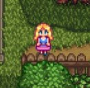
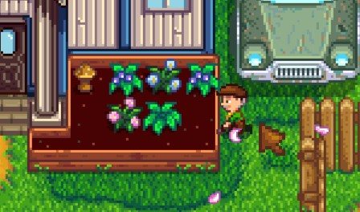

Characters
결혼 가능
1. Alex
생일 : 여름 13일생
직업 : 아이스크림 노점상(여름한정)
가족 : 조지, 에블린
운동선수가 되는 것이 꿈인 활기찬 청년.
조부모인 에블린과 조지의 집에 같이 살고 있으며 운동을 좋아한다.
헤일리와는 친구이자 서로 이성적으로 의식하는 사이.
페니 못지않게 불행한 과거가 마음의 상처로 남아 있다.
결혼 가능 NPC 중 유일하게 장사를 하는 캐릭터다.
2. Elliott
생일 : 가을 5일생
직업 : 소설가
가족 : 없음
바닷가의 오두막에 혼자 살면서 새로운 소설을 구상하는 소설가.
감상적이면서 "낭만적인 사람"으로 꽃다운 시적 감각에 빠져드는 경향이 있다.
여유가 있을 땐 스타드롭 주점에서 독한 술을 즐긴다
같은 예술쪽을 전전하는 레아와 성향이나 성격이 잘 맞아서 축제에 함께 있거나 봄꽃 무도회에서 춤추기도 한다.
결혼을 하고 나면 온갖 미사여구로 플레이어를 찬양하며, 다정하게 챙겨주는 모습을 보인다.
3. Harvey
생일 : 겨울 14일생
직업 : 의사
가족 : 없음
펠리컨 마을에 하나뿐인 의사이다.
원래는 조종사가 꿈이었으나 근시와 고소공포증 때문에 의사로 진로를 바꿨다.
그래도 조종사를 꿈꿨던 덕분인지 방에 항공기 모형들과 교신할 때 쓰는 라디오 방송 기기와 비행 무전 통신 규약서가 놓여져 있다.
결혼 후에는 생각보다 달달한 대사를 많이하고 배우자에게 애정을 많이 표시해서
결혼 가능한 남성 NPC들 중에서 결혼 만족도가 높은 편에 속한다.
4. Sam

생일 : 여름 17일 생
직업 : 조자마트, 도서관 직원
가족 : 켄트, 조디, 빈센트
놀기를 좋아하는 전형적인 성격이 밝고 외향적인 청년이다.
밝은 성격과 화려한 외모를 지녔지만 평범한 이미지라 마을 젊은이들 중에서 가장 개성이 약한 축이다.
호감도 이벤트를 본 플레이어들에게 대체로 철이 없다는 평가를 받는다.
하지만 연애할 때 인기있는 캐릭터인 세바스찬, 셰인보다 결혼 만족도가 높은 편이다.

5. Sebastian
생일 : 겨울 10일 생
직업 : 프로그래머
가족 : 로빈, 드미트리우스, 마루
부모님의 집에 사는 반항적인 외톨이다.
컴퓨터 게임과 만화책, 공상과학 소설에 깊이 몰두하는 경향이 있으며,
때로는 자신의 방에서 혼자 긴 시간동안 취미에 집중하고 있기도 한다.
결혼을 하면 플레이어를 위해서 담배를 끊는 노력도 하고, 서투르게나마 애정 표현도 자주 하는 모습이 보인다.
6. Shane
생일 : 봄 20일생
직업 : 조자마트 직원
가족 : 마니, 제스
마니의 농장에 방을 얻어 살고 있다.
아침에 조자마트에 출근하고 일이 끝나면 주점에서 술을 마신다.
거뭇거뭇한 수염 라인과 짙은 눈썹을 가진 데다, 삶에 지치고 회의감을 느끼는 모습을 자주 보인다.
결혼 후 실망스럽다는 반응도 꽤 많다.
7. Abigail
생일 : 가을 13일생
직업 : 없음
가족 : 피에르, 캐롤라인
잡화점에서 부모님과 같이 살고 있다.
가끔씩 애비게일의 '전통방식과 다른 생활방식'을 걱정하는 엄마와 싸우곤 한다.
묘지에서 홀로 있거나, 광산 근처 호숫가에서 플루트를 연주하는 걸 볼 수 있다.
연애 가능한 여자 NPC들 중에서 헤일리와 함께 인기가 많은편이다.
8. Haley
생일 : 봄 14일생
직업 : 없음
가족 : 에밀리
언니인 에밀리와 함께 산다.
유복한 집안에서 자란데다가 고등학교 시절에 퀸카로 지냈기 때문에, 허영심이 가득한 모습이 되었다고 한다.
호감도 10 이벤트 덕분에 가장 로맨틱한 히로인으로 꼽히기도 한다.
알렉스와는 친구이자 서로 좋아하는 사이인 듯하다.
9. Leah
생일 : 겨울 23일생
직업 : 예술가
가족 : 없음
마을 외곽에 있는 작은 오두막에 혼자 살고 있다.
외지인이지만 어린 시절에 스타듀 밸리에 휴가 차 머물렀던 적이 있었으며 스타듀 밸리로 이사 왔다고 한다.
대화를 해 보면 숲속 생활과 채집한 먹을거리 이야기를 정말 많이 한다.
책만 읽는 엘리엇보다 더 건강하고 술도 잘 마신다.
10. Maru
생일 : 여름 10일생
직업 : 예술가
가족 : 없음
세바스찬의 이부 여동생. 공학과 천문학에 관심이 있어 기계를 만지는데 전념하거나, 아버지의 연구를 도와주기도 한다.
하비 병원에서 간호사로 일하는데 병원에서 일할 땐 간호사 복장으로 있다.
결혼 가능한 여성 npc 중엔 인기가 가장 낮은 편으로, 외모가 호불호가 갈리기도 한데다 관련 이벤트나 연애 및 결혼 후 대사들이 로맨스와 거리가 멀어 선호도가 적다.
같이 일하는 하비를 무척 좋은 사람이지만 자기 취향이 아니라고 평가한다.
11. Penny
생일 : 가을 2일생
직업 : 선생님
가족 : 팸
강 근처에 있는 작은 트레일러에 어머니 팸과 함께 살고 있다.
깔끔한 성격으로 치워도 어머니인 팸 때문에 다시 지저분해지는 집 상태에 푸념을 늘어 놓는다.
의외로 엉뚱한 구석이 많다. 가을 품평회 때는 돌림판을 10연속으로 이겨서 출전을 금지를 당하기도 한다.
게임 내에서 가장 불행한 히로인으로 꼽히기도 한다.
결혼하면 자신이 바라던 큰 농장에서 사는 꿈도 이뤄지는 전형적인 신데렐라형의 캐릭터라고 볼 수도 있겠다.
12. Emily
생일 : 봄 27일생
직업 : 주점 아르바이트
가족 : 헤일리
헤일리의 언니. 주점에서 일을 하면서 생계를 이어가고 있다.
모험소녀 애비게일조차 능가하는 극강의 4차원 캐릭터로, 동생인 헤일리도 별난 괴짜라며 가끔씩 진짜 자기 언니가 맞는지 의심된다고 깔 정도다.
마을 대장장이 클린트가 에밀리를 짝사랑 하고 있다.
클린트가 에밀리와 나이가 많이 차이나서 그런지 에밀리의 4차원 행동에 적응하지 못하는 모습을 보여준다.
명랑하고 좋은 성격에 외모도 예뻐 플레이어들에게 인기가 많았다.
결혼 불가능
1. Lowis
생일 : 봄 7일생
직업 : 펠리컨 마을 시장
가족 : 없음
펠리컨 마을의 시장. 주인공이 물건을 판매 상자 안에 넣으면 대신 가져다 판매한다.
마을 시장이라는 자리에 자부심을 가지며 주인공을 잘 대해주지만 나이 든 사람인지라 약간 고지식한 면이 있다.
마을 대장장이 클린트가 에밀리를 짝사랑 하고 있다.
자기 자신이나 다른 주민들의 개인적인 행복, 만족보다는 지위와 명성을 더 중요하게 여긴다.
때문에 마니와 서로 사랑하는 사이지만 자신의 권위가 떨어질까봐 비밀스럽게 연애를 하고 있다.
2. Pierre
생일 : 봄 26일생
직업 : 잡화점 주인
가족 : 에비개일, 캐롤라인
캐롤라인의 남편이자, 애비게일의 아빠.
갑자기 등장한 조자마트 때문에 골머리를 썩는다.
잡화점의 주방 안에 있는 편지에는 조자마트 지점장 모리스가 대놓고 피에르를 조롱하고 있다.
딸 애비게일의 이벤트 때 하는 말들을 보면 성차별적 사고도 갖고 있어 딸에게 반항을 사고 유저들에게 쌍욕도 바가지로 얻어먹는다.
플레이어가 마을회관 루트를 타느냐 조자 맴버쉽 루트를 타느냐에 따라 대사가 다르다.
3. Caroline
생일 : 겨울 7일생
직업 : 주부
가족 : 에비개일, 피에르
피에르의 아내이자 애비게일의 엄마. 남편과는 달리 단아하고 상냥한 사람좋은 미인 이미지다.
매주 화요일 주부들끼리 잡화점에 모여서 에어로빅을 한다.
애비게일이 하루종일 방 안에만 있으면서 게임에 심취한 모습에 많이 걱정하는 모습을 보인다.
이야기를 들어보면 어렸을 적에는 플레이어처럼 농부를 꿈꿨는데, 농장이 아닌 목장 주인이 되고 싶었다고 한다. 이유는 서부 영화에 푹 빠져서 그랬다고.
친해지면 일정 확률로 봄 작물을 보내준다.
4. George

생일 : 가을 24일생
직업 : 광부 > 무직
가족 : 에블린, 알렉스
알렉스의 할아버지로 두 다리를 쓰지 못해 늘 휠체어에 앉아있다.
아내 에블린과는 달리 퉁명스럽고 무뚝뚝하지만 친밀도를 높이면 닫힌 마음을 열고 주인공에게 부드러워진다.
애비게일이 하루종일 방 안에만 있으면서 게임에 심취한 모습에 많이 걱정하는 모습을 보인다.
젊은 시절 광부였으나 광산에서 일하다 다이너마이트 사고로 다리를 못 쓰게 되셨다는 이야기를 한다.
친해지면 가끔씩 주인공에게 돌을 보낸다.
5. Evelyn
생일 : 겨울 20일생
직업 : 주부
가족 : 조지, 알렉스
조지의 부인이자 알렉스의 할머니로 주인공에게도 친절히 대해주는 마음씨 고운 할머니다.
제과제빵이 취미이자 소일거리인 것 같다. 친밀도를 올리면 쿠키와 라이스 푸딩 제조법을 가르쳐 준다.
애비게일이 하루종일 방 안에만 있으면서 게임에 심취한 모습에 많이 걱정하는 모습을 보인다.
루이스에게 허락을 받아 마을 공동 정원을 관리하고 있다.
다른 캐릭터와 달리 온화하고 성격이 매우 좋아 거스와 더불어 플레이어들에게 좋은 평가를 받는다.
6. Marnie
생일 : 가을 18일생
직업 : 목장주
가족 : 재스, 셰인
목장주. 마음씨 좋은 여인으로 조카인 셰인과 재스와 목장에 같이 살고 있다.
제과제빵이 취미이자 소일거리인 것 같다. 친밀도를 올리면 쿠키와 라이스 푸딩 제조법을 가르쳐 준다.
시장인 루이스와 연애 중이다. 루이스와 공개 연애를 하고 싶어하지만 이미지 관리를 위한 루이스의 반대로 비밀 연애를 하고 있다.
모든 상인 NPC들 중에서 가장 자리를 잘 비운다. 일주일에 월, 화, 목은 아예 가게를 쉰다
친해지면 일정 확률로 건초를 보내준다.
7. Jas
생일 : 여름 4일생
직업 : 없음
가족 : 마니, 셰인
마니의 수양 조카손녀로 셰인의 대녀(goddaughter)다.
재스와의 호감도를 올리면 대화를 통해 알 수 있는데, 팬덤에서는 재스의 부모가 마법사가 아닌가 추측중이지만 확실치는 않다.
붙임성이 좋은 또래 친구인 빈센트와는 달리 처음에는 모르는 사람과 이야기하면 안 된다고 주인공을 멀리한다.
하지만 친밀도가 높아지면 잘 웃고 말수가 많아진다.

8. Robin
생일 : 가을 21일생
직업 : 없음
가족 : 드리트미우스, 세바스찬, 마루
스타듀밸리에 도착하면 처음으로 만나게 되는 NPC. 전 남편과의 사이에서 낳은 아들 세바스찬과, 재혼한 남편인 드미트리우스 사이에서 낳은 딸 마루가 있다.
가구와 나무, 돌을 팔며, 플레이어의 주문을 받아 집을 업그레이드하거나 농장에 건물을 지어준다.
세바스찬과 마루의 터울이 크지 않은 것으로 볼 때 세바스찬이 아주 어릴 때 재혼을 한 것으로 보인다.
성격도 좋고 쾌활하며 아들 세바스찬을 아끼고 있지만 소통하는데 어려움을 겪고 있다.
친해지면 일정 확률로 나무를 보내준다.
9. Demetruis
생일 : 여름 19일생
직업 : 과학자
가족 : 로빈, 세바스찬, 마루
로빈의 남편. 항상 연구에 몰두하는 모습을 보인다. 주인공 집 근처의 동굴을 개조하여 과일이나 버섯을 생산하게 도와준다.
주인공을 친절하게 대하지만, 주인공이 자신의 딸인 마루와 가까이 지내는 것을 좋게 보지 않는다.
여기에 의붓아들인 세바스찬에게 아무런 관심이 없다는 점 때문에 플레이어들은 호감으로 보지는 않는다.
플레이어들에게 주는 대부분의 퀘스트가 특정 문제로 인해 발생한 스타듀밸리 생태계를 조절하는 일이다.
건강식을 좋아하며, 친해지면 일정 확률로 조개류 아이템이나 광물을 보낸다.

10. Gus
생일 : 여름 8일생
직업 : 스타드롭 주점 주인
가족 : 없음
인심 좋은 스타드롭 주점 사장이자 바텐더로 주점 쓰레기통을 뒤지다 들킨 라이너스에게도 펠리컨 마을 사람은 단 1명이라도 굶길 수 없다며 직접 만든 요리를 나눠주는 대인배.
사람이 어찌나 착한지 주점 운영이 힘든데도 친구인 팸에게 외상으로 술을 판매하며
심지어 외상값을 내놓으라는 말 조차도 미안해하며 하지 못하고 플레이어에게 간신히 부탁하는 정도.
친해지면 일정 확률로 주점 요리를 보내준다. 팬덤에서는 에블린 할머니와 함께 펠리컨 마을에서 가장 인심 좋은 사람으로 평가받고 있다.
거스에게서 음식을 구입하느라 돈을 많이 쓰게 되는 때가 오게 된다.
11. Pam
생일 : 봄 18일생
직업 : 마을버스 운전 기사
가족 : 페니
페니의 엄마. 전직 화물 트럭 운전기사였다가 스타듀 밸리 마을버스 운전기사로 일했었다.
하지만 버스가 고장나고 마을 자원 부족으로 버스 수리가 요원해지면서 현재는 실업자가 되었다.
대부분의 시간을 거스의 주점에서 보내며 술로 세월을 보내고 있다.
거스 대사에 따르면 거의 대부분 외상으로 이용한다고 한다.
주인공과 친해지면 말투도 유순해지고 한잔 사주고 싶은데 돈이 없어 못사준다는 대사를 내뱉기도 한다.

12. Kent
생일 : 봄 4일생
직업 : 군인
가족 : 조디, 샘, 빈센트
조디의 남편이자 샘과 빈센트의 아버지이며 군인이다.
1년차엔 만날수 없는데 게임 시작 시점에선 군인으로 파병을 나가 자리를 비웠다가
마을 축제 때의 즐거운 분위기 속에서도 불안 증세를 보이는 등 경미한 PTSD 증상을 앓고 있는 걸로 보인다.
어찌나 자리를 오래 비웠는지 아내 조디의 침대도 1인 침대로 바뀌어 버린지 오래다.
거대 폭탄을 주식으로 삼는 용암장어 어란을 양식할때 약간이나마 도움이 된다.
13. Jodi
생일 : 가을 11일생
직업 : 주부
가족 : 켄트, 샘, 빈센트
켄트의 부인이며 샘과 빈센트의 어머니이다. 남편 켄트를 항상 걱정하고 있다.
가족을 사랑하지만 제멋대로 자란 장남 샘과 장난꾸러기 차남 빈센트, 그리고 PTSD를 앓고 있는 남편 때문에 마음고생을 하고 있다.
집에 틀어박힌 주부의 삶에 염증을 느끼는 듯하다.
너무 아내와 엄마로서의 역할에 시달리다보니 결혼 전 자유롭던 자신의 모습이 그립다고 하기도 한다.
같은 주부인 캐롤라인과 친해서 둘이 함께 있는 모습이 종종 보인다. 친해지면 가끔 비료를 보내 주기도 한다.
14. Vincent
생일 : 봄 10일생
직업 : 없음
가족 : 켄트, 샘, 조디
켄트와 조디의 작은아들. 같은 또래인 재스와 달리 붙임성이 좋고 쾌활하며,
형인 샘과 아버지 켄트처럼 멋있게 크고 싶어한다.
친밀도가 높으면 커서 페니 선생님과 결혼하고 싶다고 한다.
아버지가 오길 기대하고 바랐으나 막상 달라진 아버지의 모습에 슬퍼한다.
예전에는 젤리를 주면 싫어했으나 현재는 좋아하는 것으로 바뀌었다.
15. Clint
생일 : 겨울 26일생
직업 : 대장장이
가족 : 없음
내성적이고 우울한 성격을 가지고 있다.
증조부서부터 쭉 대장장이 가문이었고 자기 자신도 아버지가 강요해서 대장장이가 되어버린데다,
현재는 일을 하면서 수입이 잘 들어오지도 않아 가끔씩 자기 신세를 한탄한다.
허나 일에 나름 자부심도 가지고 있어서 품평회 때 주괴와 무기 등 생산품을 전시해 놓고 자신감을 드러내기도 한다.
괭이, 도끼, 곡괭이 등의 도구 업그레이드도 담당하고 있다.
16. Willy
생일 : 여름 24일생
직업 : 낚시꾼, 어부
가족 : 없음
봄 2일차부터 등장하며 편지를 통해 주인공을 바닷가로 부르고 만나면 전에 쓰던 것이지만
지금은 안 쓴다며 플레이어에게 대나무 낚시대를 선물로 준다.
등장 전에는 작은 배를 타고 한달동안 낚시 여행을 다녀왔다고 한다. 낚시를 자주 한다면 볼 일이 많다.
아버지를 따라다니며 낚시를 하면서 낚시에 눈을 뜨고 어부가 된 것으로 보이며 해변에 있는 생선 가게에서 홀로 사는 중이다.
괭이, 도끼, 곡괭이 등의 도구 업그레이드도 담당하고 있다.
17. Wizard
생일 : 겨울 17일생
직업 : 마법사
가족 : 마녀(전처)
쪽지에서 확인할 수 있는 본명은 M. 라스모디우스(M. Rasmodius).
남쪽 숲 마법사의 탑에 거주하고 있다. 친해지기 전까지는 별 대사가 없다.
고아한 말투를 사용하며 호감도가 높아지면 주인공에게 언젠가 세상을 떠나기 전에 자신의 연구를 계속할 제자를 찾아야 겠다고 언급한다.
오래전에 마녀와 결혼했으나 지금은 이혼 상태. 스타듀 밸리에 친딸이 산다고 한다.
최종 아이템인 황금 시계를 판매하는 미스터 치에 비할 정도로 최종급 컨텐츠를 가진 NPC이다.
18. Linus
생일 : 겨울 3일생
직업 : 노숙자
가족 : 없음
자연에서 사는 노숙인. 동네에서 찬밥 신세다.
친밀도를 어느 정도 올려두면 회 레시피나 야생 미끼의 제조법을 알려준다.
주인공이 탈진이나 수면부족, 체력 0이 되는 이유로 쓰러져버렸을 때 구해주는 사람 중 한 명이다.
대체 왜 이렇게 사는 건지는 불명이다.
여러 대사들에서 종합해보면 라이너스 본인은 마음만 먹으면 바로 직업을 구할수 있을 정도로 몸이 건강하나 자신의 결정으로 이렇게 살고 있는 것이라고 한다.
19. Dwarf

생일 : 여름 22일생
직업 : 없음
가족 : 없음
광산 오른쪽의 바위를 부수면 만날 수 있지만,
본격적으로 만나려면 광산에서 무작위로 얻는 드워프 두루마리 1부터 4까지 모두 박물관에 기부해야 그가 하는 말을 이해할 수 있다.
거 그림자 일족과 드워프간의 전쟁이 있었기 때문에 그림자 인간 일족인 크로버스와는 사이가 정말 좋지 않다.
회화가 끝나면 장사를 하며, 각종 폭탄 시리즈와 광부의 간식, 희귀 허수아비 등을 판매한다.
몇몇 물건은 사람들이 자고 있을때 몰래 가져온다고 한다.
20. Krobus
생일 : 여름 22일생
직업 : 없음
가족 : 없음
그림자 일족. 하수구에서 만날 수 있다.
과거 원소전쟁이라는 이름으로 그림자 일족과 드워프간의 전쟁이 있었기 때문에 드워프와는 사이가 좋지 않으며,
마을 사람에게 모습을 드러내는 것을 꺼린다.
광산에서 볼 수 있는 동족과는 달리 플레이어에게도 해를 끼치지 않으며,
워프와의 마찰 이벤트에서도 끝까지 그림자 일족을 용서하지 않을 것이라는 드워프와는 달리
"너에겐 감정이 없다. 미안하다"는 식으로 사과를 한다.
21. Sandy
생일 : 가을 15일생
직업 : 오아시스 상점 주인
가족 : 불명
다정다감하고 활발한 성격의 소유자. 칼리코 사막에서 상점을 운영하는지라,
사람 왕래가 뜸해 오랜만에 온 손님인 주인공을 보고 좋아라 한다.
돈 불리기 좋은 작물인 스타후르츠의 씨앗을 팔고 있고,
목요일 한정이긴 해도 디럭스 성장 촉진제를 피에르보다 훨씬 싸게 팔기 때문에 중반부 이후로 농사 짓는 사람들이 애용하기도 한다.
에밀리 못지않게 팬이 많지만, 결혼 가능 패치 NPC에서 에밀리에게 밀렸다.
예쁜 외모에도 불구하고 초상화가 옆모습밖에 드러내지 않아 약간 어색해 보인다.
22. Leo
생일 : 여름 26일생
직업 : 불명
가족 : 불명
1.5 버전 업데이트로 추가된 등장인물.
진저 섬에서 표류하여 살고 있는 어린아이다.
원래는 평범한 다른 곳에서 여느 어린이마냥 정상적인 삶을 살고 있었으나,
파도가 덮쳐 부모와 떨어지고 진저 섬으로 떠밀려 오게 되었다.
섬에 오래 살면서 사람을 만나질 못하다보니 사람과 대화를 하는 법조차도 잊어가고 있던 불쌍한 인물.
지식을 배우기 위해 페니가 수업을 할 때 아이들과 같이 동행하기도 한다.
호감도 관리 불가능 등장인물
1. Marlon
모험가 길드의 구성원. 무기, 신발, 반지를 판매한다.
2. Mr.qi
수수께끼의 인물. 샌디의 상점 2층에 카지노를 운영하고 있다.
3. Grandpa
할아버지의 죽음 → 주인공에게 편지 전달 → 귀농 → 2년 후 평가순으로 진행되는 메인.